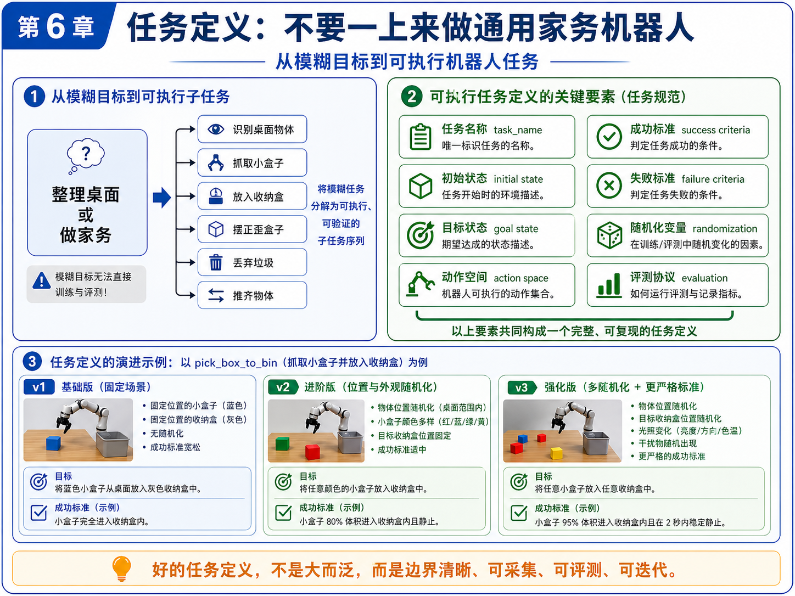
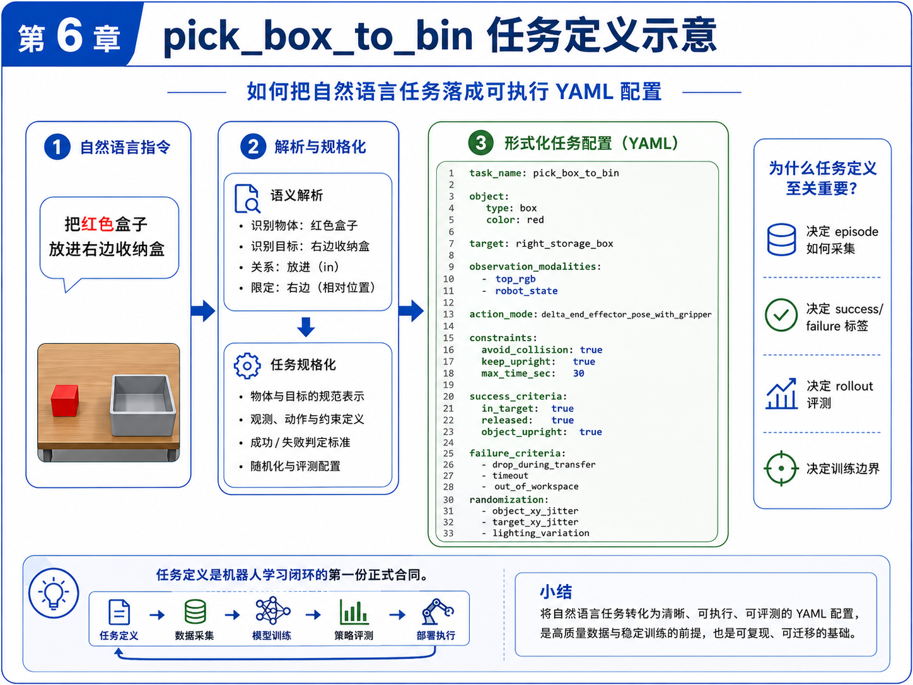

第 6 章：任务定义：不要一上来做通用家务机器人
到了这一章，本书主线项目终于从“概念理解”进入“正式建模”。
前几章我们已经完成了几件非常关键的事情：
- 明确了具身智能不是“机器人 + LLM”的口号，而是任务、数据、策略、评测和失败回收构成的闭环；
- 建立了 observation、state、action、policy、episode 这些基础概念；
- 理解了模仿学习、BC、ACT 与 VLA 在学习路径中的相对位置；
- 让主线项目第一次具备了“语言 → 结构化任务”的入口。
但到目前为止，我们仍然还没有真正回答一个更底层、更现实的问题：
机器人到底要做什么？
很多初学者在这里会犯一个非常典型的错误：一开始就说自己要做“家务机器人”“整理桌面机器人”“理货机器人”“厨房机器人”。这些说法在产品讨论里没有错，但在训练与工程实现里，它们几乎都太大、太泛、太模糊，无法直接成为可训练任务。
所以本章的目标很明确：
- 说明为什么“整理桌面”“做家务”不是可直接训练的任务；
- 讲清楚一个可执行任务到底由哪些要素构成；
- 用主线项目
pick_box_to_bin给出第一个真正正式、可验证、可采集、可评测的任务定义； - 把自然语言任务进一步落成 YAML 任务配置；
- 给出一个任务配置校验脚本，让任务定义第一次具备“工程边界”。
这一步极其重要。因为从本章开始，主线项目第一次拥有了真正意义上的“任务合同”。
1. 本章要解决的问题
本章重点解决以下九个问题：
- 为什么“整理桌面”“做家务”“理货”不是可直接训练的任务？
- 一个可执行任务至少应包含哪些要素？
- 什么叫初始状态与目标状态？
- 成功标准与失败标准为什么必须写清楚？
- 动作空间为什么是任务定义的一部分，而不是后面再想？
- 为什么随机化变量必须在任务定义阶段就考虑？
- 任务定义会怎样反向影响 episode 采集和评测协议？
pick_box_to_bin的 v1 / v2 / v3 应如何演进？- 如何用 YAML 将任务定义写成工程可用的配置文件？
这些问题看起来像“文档问题”，但实际上它们决定了后面所有的数据、训练和评测能不能成立。
2. 为什么这个问题重要
2.1 任务定义模糊，后面一切都会跟着模糊
如果你不把任务定义清楚，那么：
- 数据采集的人不知道该怎样演示；
- 写规则控制的人不知道怎样判断“完成了没有”；
- 做模仿学习的人不知道标签边界在哪里；
- 做 rollout 评测的人不知道成功率到底怎么算；
- 失败样本回收的人也很难区分，是“模型没学会”，还是“任务从一开始就没定义清楚”。
所以，任务定义不是文档装饰，而是整个闭环的上游约束。
2.2 工程上最怕的不是任务小，而是任务边界不清
很多初学者会担心：“是不是我做得太小了？”
其实刚开始最危险的不是任务太小，而是任务太泛。一个任务即使小，只要它：
- 边界清楚；
- 可采集；
- 可执行；
- 可评测；
- 可迭代；
它就是一个好任务。
相反，哪怕你说自己在做“通用家务机器人”，只要你说不清：
- 要处理什么物体；
- 在什么工作空间中；
- 动作能输出什么；
- 什么时候算成功；
- 失败如何记录；
那它就不是一个可以训练的任务，而只是一个愿景。
2.3 自动驾驶工程师在这里有天然优势
如果你有自动驾驶背景，会发现这件事其实并不陌生。
自动驾驶里，很多能力也不是一句“自动驾驶”就能概括，而是被拆成：
- 车道保持；
- 跟车；
- 变道；
- 泊车入库；
- 障碍物绕行；
- 特定场景触发逻辑。
具身智能也是一样。真正落地时，必须先把“大目标”拆成“小闭环任务”。
3. 核心概念
3.1 什么是模糊任务，什么是可执行任务
先看几个常见但模糊的任务表述：
- 整理桌面；
- 做家务；
- 收拾房间；
- 理货；
- 分拣杂物。
这些表述的问题并不是它们不重要，而是它们都包含了太多隐含子任务。例如“整理桌面”至少可能包含：
- 识别桌面物体；
- 抓取小盒子；
- 把盒子放入收纳盒；
- 把歪掉的盒子摆正；
- 把垃圾扔进垃圾盒；
- 把散乱的物品推齐；
- 区分哪些物体应该保留、哪些应该丢弃。
这说明“整理桌面”更像一个任务集合，而不是一个单一训练任务。
可执行任务则必须再往下走一步，变成类似：
- 从桌面抓取一个小盒子并放入右侧收纳盒；
- 将歪掉的小盒子摆正；
- 把蓝色瓶子移动到桌面中央；
- 将指定区域中的垃圾块放入垃圾桶。
也就是说，可执行任务必须具有：
- 明确对象；
- 明确目标；
- 明确工作空间；
- 明确动作边界；
- 明确成功/失败标准。
3.2 任务定义的八个关键要素
本书建议把一个任务定义最少拆成以下八部分：
- 任务名称（task_name）：唯一标识任务；
- 初始状态（initial state）：任务开始时环境和机器人处于什么状态；
- 目标状态（goal state）：任务完成后应满足什么条件；
- 动作空间（action space）：机器人允许输出什么动作；
- 成功标准（success criteria）：什么时候算任务成功；
- 失败标准（failure criteria）：什么时候判定失败；
- 随机化变量（randomization）：训练和评测中哪些因素会变化；
- 评测协议（evaluation）：如何跑评测、记录哪些指标。
这八部分并不是形式主义，而是为了让任务真正可复现、可采集、可训练。
3.3 初始状态与目标状态
很多人写任务时只会写“抓起盒子并放入收纳盒”，但真正可执行时，至少还要回答：
- 盒子起始在桌面的什么范围？
- 收纳盒起始在什么位置？
- 机器人起始位姿是什么？
- 夹爪是开还是合？
- 盒子一开始是不是已经在收纳盒中？
- 是否允许环境中有其他干扰物？
这些都属于初始状态的一部分。
目标状态则要回答：
- 盒子是否在收纳盒内？
- 盒子是否稳定静止？
- 夹爪是否已经释放？
- 盒子是否保持竖直？
- 是否要求 2 秒内不再移动？
如果这些条件不写清楚，后续 success/failure 标签就会很混乱。
3.4 成功标准与失败标准
对于 pick_box_to_bin，一个好的成功标准示例可能是：
- 物体有至少 80% 体积进入目标收纳盒；
- 物体在释放后保持稳定 2 秒；
- 夹爪已经打开；
- 物体未翻倒。
失败标准示例则可能包括：
- 物体在转移过程中掉落；
- 物体掉出工作空间；
- 发生明显碰撞；
- 超时未完成。
请注意：成功标准与失败标准必须是可记录、可检查、可复核的，而不是凭感觉判断。
3.5 动作空间为什么必须提前定义
动作空间决定了策略到底在学什么。例如在主线项目里，我们当前选择的是：
delta_end_effector_pose_with_gripper
也就是：
- 末端位姿增量（dx, dy, dz, droll, dpitch, dyaw）
- 夹爪动作增量（gripper_delta）
如果你不在任务定义里把动作空间写明，后面 episode 的 actions.jsonl、训练脚本的输出头、rollout 的控制器接口都会飘。
3.6 随机化变量为什么不是“以后再说”
很多初学者习惯先做完全固定场景，等任务勉强跑通后再考虑随机化。这没问题，但随机化变量必须在任务定义阶段就被预留出来，否则后面很难平滑扩展。
例如 pick_box_to_bin 可以逐步引入：
- 物体位置随机化；
- 收纳盒位置随机化；
- 物体颜色随机化；
- 光照变化；
- 干扰物随机出现。
如果这些变量在任务定义中完全缺失，那么任务演进从 v1 到 v2 / v3 时就会很痛苦。
3.7 v1 / v2 / v3 的任务演进思路
本书建议把任务版本显式写出来，而不是把所有难度一次性堆进去。
- v1：固定场景。单个盒子、单个收纳盒、位置固定、成功标准宽松；
- v2：位置与外观随机化。盒子位置变动、颜色变动；
- v3：更强随机化与更严格标准。收纳盒位置也随机，增加光照变化、干扰物和更严格成功标准。
这种分阶段任务设计很重要，因为它让数据采集、训练和评测都可以稳定迭代，而不会一上来就陷入复杂度泥潭。
4. 概念图 / 流程图 / 架构图
4.1 图 6-1 从模糊目标到可执行任务

这张图做了三件事：
- 把“整理桌面 / 做家务”这样的模糊目标拆成可执行子任务；
- 给出可执行任务定义的关键要素；
- 用
pick_box_to_bin展示 v1 / v2 / v3 的演进路径。
如果你只记住本章一张图，我建议就记住这张。因为它实际上把任务定义的“问题空间”和“演进路径”都讲清楚了。
4.2 图 6-2 从自然语言任务到 YAML 配置

这张图强调的是：自然语言指令必须进一步规格化，变成可执行任务配置。它是第 5 章“语言 → 结构化任务”的延续，也是本章“结构化任务 → 正式配置文件”的落地。
4.3 Mermaid 图：模糊任务拆解
flowchart TD
A[整理桌面] --> B[识别桌面物体]
A --> C[抓取小盒子]
A --> D[放入收纳盒]
A --> E[摆正歪盒子]
A --> F[丢弃垃圾]
A --> G[推齐物体]
4.4 Mermaid 图：任务定义要素结构
flowchart TD
A[task_name]
B[initial_state]
C[goal_state]
D[action_space]
E[success_criteria]
F[failure_criteria]
G[randomization]
H[evaluation]
A --> X[完整任务定义]
B --> X
C --> X
D --> X
E --> X
F --> X
G --> X
H --> X
5. 工程化理解
5.1 为什么任务定义是“第一份正式合同”
主线项目进入本章后，第一次出现了一个很重要的变化：
后面的数据、代码、评测，不再只是围绕“一个想法”，而是围绕“一个明确任务配置”。
这就是任务定义的合同价值。它把下面这些环节串了起来：
- 采集什么数据；
- episode 如何标注；
- success / failure 怎么判断；
- rollout 用什么指标评估；
- 训练边界在哪里；
- 后续如何演化到更难版本。
5.2 为什么 YAML 很合适
YAML 不是唯一选择，但它非常适合当前阶段，因为它：
- 可读性强；
- 容易手工维护；
- 结构清晰；
- 可以直接被脚本加载校验；
- 便于作为后续任务库的一部分长期积累。
本章主线项目会新增两个配置文件：
configs/task_pick_box_to_bin.yamlconfigs/task_straighten_box.yaml
其中前者是主线任务的正式定义，后者用于提醒你：一旦任务定义体系建立起来，扩展新任务会容易很多。
5.3 为什么要有校验脚本
任务定义如果只是“写在文档里”，仍然可能逐渐失控。比如：
- 忘记写 failure_criteria；
- success_criteria 写得过于空泛；
- observation.modalities 漏了；
- action_space 没有 bounds；
- 没有 timeout 规则。
因此，本章新增 scripts/validate_task_config.py，用于做最小静态校验。
请注意，这个脚本的目的不是一次性验证“物理正确性”，而是先做最基本的字段完整性和结构合理性检查。这对于工程工作流来说非常有价值。
6. 主线项目中的位置
本章为主线项目新增：
robot-learning-shelf-demo/
configs/
task_pick_box_to_bin.yaml
task_straighten_box.yaml
scripts/
validate_task_config.py
这意味着主线项目第一次具备了：
- 正式任务配置；
- 任务版本边界；
- 配置静态校验能力。
这是进入“标准数据格式”和“数据质检”前的必要步骤。
7. 示例
7.1 示例 1：一个不合格的任务定义
错误写法：
任务：整理桌面
成功标准：桌面看起来更整洁
它的问题在于：
- 没有具体操作对象；
- 没有工作空间范围；
- 没有动作空间；
- 没有成功的可测量标准；
- 没有失败定义；
- 没有随机化边界。
这样的任务定义几乎无法直接进入数据采集与训练。
7.2 示例 2：合格的 pick_box_to_bin
一个合格的 pick_box_to_bin 任务至少应该明确：
- 物体是小盒子；
- 目标是指定收纳盒；
- 初始状态下物体在桌面、收纳盒为空、机器人在 reset pose；
- 动作空间是末端位姿增量 + 夹爪控制；
- 成功标准是物体进入收纳盒并稳定停住；
- 失败标准包含掉落、出界和超时。
这些信息在 configs/task_pick_box_to_bin.yaml 中都会被结构化保存。
7.3 示例 3：场景随机化变量表
对本书主线项目，建议至少显式记录：
| 随机化项 | 作用 | 初始建议 |
|---|---|---|
| object_xy_jitter | 增加位置鲁棒性 | 5 cm |
| bin_xy_jitter | 避免策略过拟合固定收纳盒位置 | 3 cm |
| object_color | 支持视觉泛化 | 红/蓝/绿/黄 |
| lighting_variation | 避免对单一光照过拟合 | mild |
| distractor_objects | 提升抗干扰能力 | v3 再加入 |
7.4 示例 4：为什么评测协议要前置设计
如果你不在任务定义里提前写清楚评测协议，那么后面很容易出现：
- 每个人对成功率的计算方式不同；
- 一个同样的失败 case 被不同人打成不同标签；
- 没有固定的 trial 数，导致结果不可比；
- 没有 failure reason 分类，改进方向模糊。
所以，本书建议把 evaluation 也写进任务配置。
8. 练习代码
8.1 任务配置文件
本章最重要的产物之一是：
configs/task_pick_box_to_bin.yaml
该文件定义了：
- 工作空间；
- 物体与目标容器；
- 初始状态；
- 目标状态；
- 动作空间；
- observation modalities；
- success / failure criteria；
- 随机化变量；
- 评测协议。
8.2 任务配置校验脚本
脚本：scripts/validate_task_config.py
推荐运行方式：
cd robot-learning-shelf-demo
python scripts/validate_task_config.py \
--config configs/task_pick_box_to_bin.yaml \
--output reports/ch06_task_pick_box_to_bin_validation.json
运行后你会得到一个类似这样的报告：
{
"ok": true,
"errors": [],
"warnings": [],
"summary": {
"task_name": "pick_box_to_bin",
"version": "v1",
"observation_modalities": ["top_rgb", "wrist_rgb", "robot_state"],
"action_mode": "delta_end_effector_pose_with_gripper"
}
}
这说明当前配置至少在字段层面是完整的。
9. 代码解释
9.1 这段代码解决什么问题
validate_task_config.py 解决的是：如何让任务定义第一次变成一个可自动检查的工程对象。
9.2 校验逻辑分三层
第一层：检查顶层字段是否齐全，例如：
task_nameversiondescriptioninitial_stategoal_stateaction_spaceobservationsuccess_criteriafailure_criteria
第二层：检查关键子字段，例如：
action_space.modeaction_space.action_dimobservation.modalities
第三层：给出工程性 warning，例如：
- 是否缺少
timeout_sec - 是否没有 randomization
- 是否没有 action limits
9.3 为什么 warning 也重要
很多配置并不是“完全错误”，但会让后续流程变脆弱。例如：
- 没有 randomization，不代表不能跑；
- 但意味着训练泛化性很差；
- 没有 timeout，不一定立刻崩；
- 但 rollout 评测就会模糊。
因此，把 error 和 warning 分开，是更符合工程实际的做法。
10. 常见错误
错误 1：把大愿景当成训练任务
“家务机器人”“整理桌面机器人”都是方向，不是第一阶段训练任务。
错误 2：只有成功标准，没有失败标准
没有失败定义，数据标签、回收分析和评测报告都会混乱。
错误 3：动作空间不写清楚
不写 action mode，后面的 episode 数据和训练输出就难以统一。
错误 4：把随机化理解成“后面再说”
随机化可以后面逐步增加，但变量类别应当在任务定义阶段就被考虑。
错误 5：任务配置只写给人看，不写给代码用
真正有价值的任务定义，应该能被脚本加载、校验、版本化、长期维护。
11. 本章练习
练习 1：基础练习
把“理货”拆成至少 8 个可执行子任务。
练习 2：工程练习
在 task_pick_box_to_bin.yaml 中增加一个 distractor_objects 配置，并为 v3 版本预留字段。
练习 3：工程练习
补充 task_straighten_box.yaml 的 success / failure criteria，使其和 pick_box_to_bin 一样完整。
练习 4：进阶练习
扩展 validate_task_config.py，使其支持：
- 检查
evaluation.metrics是否为空； - 检查
instruction_templates至少包含一条自然语言示例； - 检查随机化字段数是否过少。
练习 5：思考练习
任务定义不清，会如何影响：
- episode 采集；
- success / failure 标签；
- rollout 评测；
- 模型训练？
请分别展开说明。
12. 本章产出
本章应当产出：
- 第一个正式任务配置
task_pick_box_to_bin.yaml； - 一个辅助任务配置
task_straighten_box.yaml； - 一个最小任务配置校验脚本
validate_task_config.py； - 对“模糊任务 → 可执行任务”的清晰理解；
- 对任务 v1 / v2 / v3 演进路径的初步方法论。
13. 小结
这一章最重要的结论可以概括成一句话：
不要一上来做通用家务机器人，要先做边界清晰、可采集、可评测、可迭代的小任务。
对主线项目来说，pick_box_to_bin 的价值不在于它“简单”，而在于它是一个足够小、又足够完整的任务闭环起点。它能接住：
- 语言任务入口；
- 任务配置；
- episode 采集；
- success / failure 标签；
- 模仿学习 baseline；
- rollout 评测。
下一章，我们就顺着这条线继续推进：既然任务已经正式定义好了，那么**一条 Episode 到底应该长什么样？**换句话说，我们要开始把“任务定义”真正落到“数据格式”。